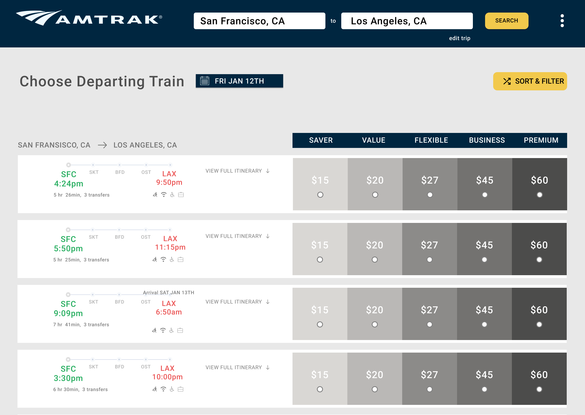
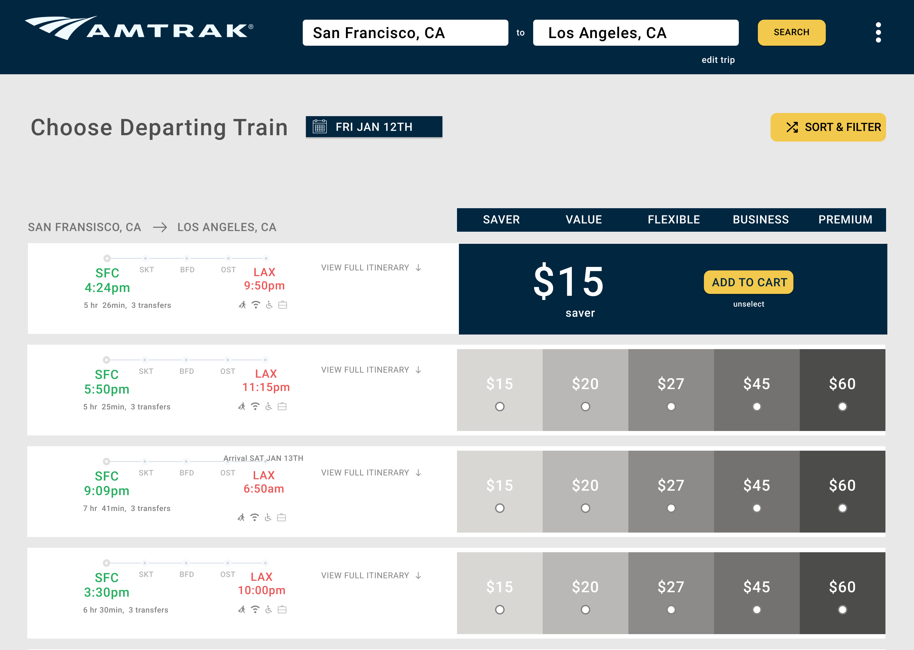
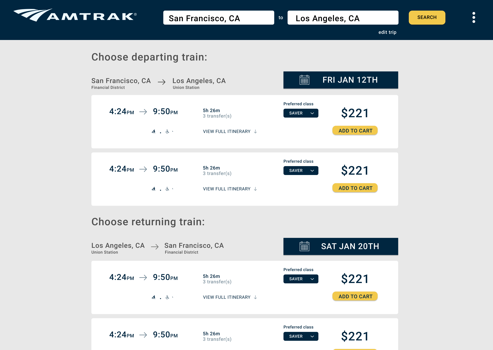
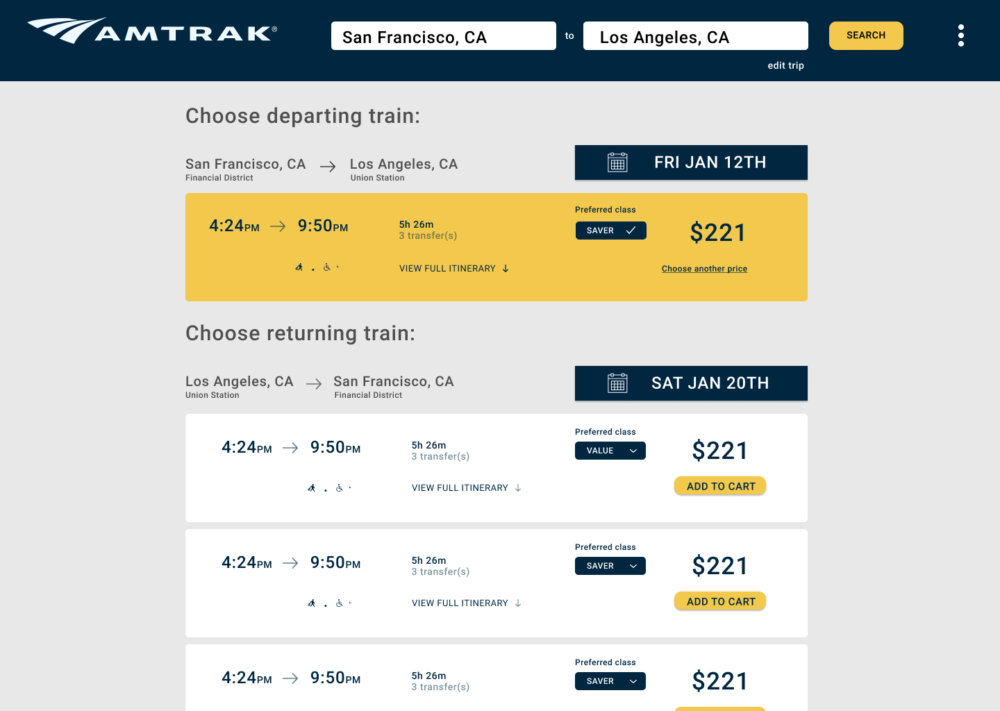
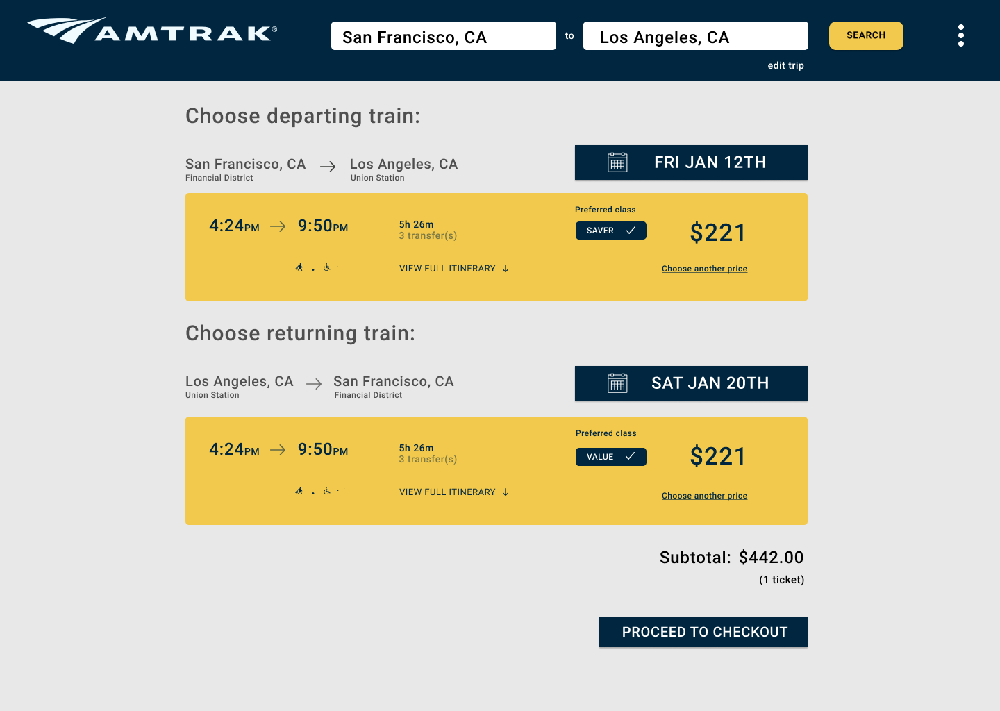

AMTRAK REDESIGN
Note: this is not done by the official Amtrak team. This is just a concept our team (Shreeman Hariharan, Cindy Tang, Susan Lee) made up for a school project.
Problem
Amtrak's current booking process troubles are resulting from one major component - the route selection step in the process. I have developed the following reasons for the difficulties:
- Issues with recognition vs. recall.
- Complicated UI.
- Poor use of layout and color.
- Bad presentation of feedback
- Misuse of information.
Goal
To make the route results page show all the route information in a manner that doesn't overwhelm the user.
Team and Role
I worked primarily on prototype creation, leading the design process of our first redesign. I additionally participated in each step of our design process: discovering, defining, ideating, prototyping, and testing.
/////
RESEARCH
Usability Tests
To understand how users purchased train tickets our team observed 3 usres perform seven tasks while they simultaneously performed think-alouds. Our results can be summarized as the following:
- Users found it hard to understand the contents of a route.
- The website demanded a great deal of effort from the user.
- Users found it ahrd to differentiate between the separate routes.
- Users found it hard to proceed after selecting a trip
User Interviews
We followed the observations with interview questions to get a greater understanding of the usability tests and general understanding of users' experiences around the use of passenger railroad services. Our results can be summarized as the following:
- There was irrelevant use of information: such as the specific duration of travel.
- Transfer boxes gave off the impression of multiple routes.
- The website did not provided meaninful feedback about the system status.
- The current placement of signifiers differentiating the ticket prices delayed user workflow.
Pain points
Summarising the research I have discussed, I have developed the following pain points:
- Issues with recognition vs. recall
- Complicated UI
- Poor use of layout and color
- Bad presentation of feedback
- Misuse of information
//////
SOLUTIONS
In order to find efficient and effective work, our team created 2 distinct redesigns that had distinct solutions in solving the design problem. Starting from the pain point, I tried to find solutions that focused on maintaining the functionality of Amtrak while reducing the cognitive workload of the user.
After ideating potential solutions, I used Figma to convert the wireframes into hi-fidelity mockups.
After ideating potential solutions, I used Figma to convert the wireframes into hi-fidelity mockups.



Hi fidelity mockups of redesign #1



Hi fidelity mockups of redesign #2
I have separated the solutions into categories that best represents the solution I worked on - redesign #1
Function
There were a few changes to the functions in order to meet the pain points listed earlier. Said changes can be summarized as:
- Timeline removed - The journey timeline was removed from the top as it proved to be adding onto the cognitive stress and also proved to be irrelevant
- Search Bar - The navigation bar was redesigned to act as a search bar and be a host for the train route information. This decision gives the user control, freedom, and flexibility in changing their train routes
Format
Overall, most of the changes in this project were format changes. Our decisions can be summarized as:
- Spacing - It was decided to increase the white space between the routes to convey separation of groups.
- Scope Compreassion - It was decided to compress the train route information into a scope that was easy for the user to analyze and process in order to reduce the user’s memory load, but also to prevent issues with recognition vs recall.
- Transfers - To maintain the same amount of information and reduce the cognitive work load, it was decided to hide the transfer information under the itinerary.
- Ticket prices - Ticket prices were color coded to mark increase in pricing. This decision was done to present some form of visual representation of ticket value outside of prices. This change was done with the hopes of improving feedback.
//////
VALIDATION
To understand the strengths and weakness of our redesigns, we tested our redesign on 3 different users. We evaluated and compared the 2 redesigns against each other and set variables on how we were going to decide whether any of our redesigns were better. Are results can be summarized as the following:
- First redesign worked better than the original Amtrak website
- Helping users to distinguish ticket options lead to better user satisfaction
- Minimal design lead to faster task completion time
- Scope compression made it easier for the users to analyze the data
///////
CONCLUSION
Unfortunately we were not able to conduct user interviews and observations to test our design solution. We did not have the time to take further action. If we had more time to complete the project, we would have allocate more resources and effort into testing our prototype so we could iterate to a better design solution.
Overall, the project gave me a lot of insight on rapid prototyping. As part of our final for our class, the project was meant to challenge us to define and solve the design problem of a random topic of our choosing. From making a user test plan to creating fast prototypes of two design solutions, I was able gain experience with a design sprint.
Overall, the project gave me a lot of insight on rapid prototyping. As part of our final for our class, the project was meant to challenge us to define and solve the design problem of a random topic of our choosing. From making a user test plan to creating fast prototypes of two design solutions, I was able gain experience with a design sprint.